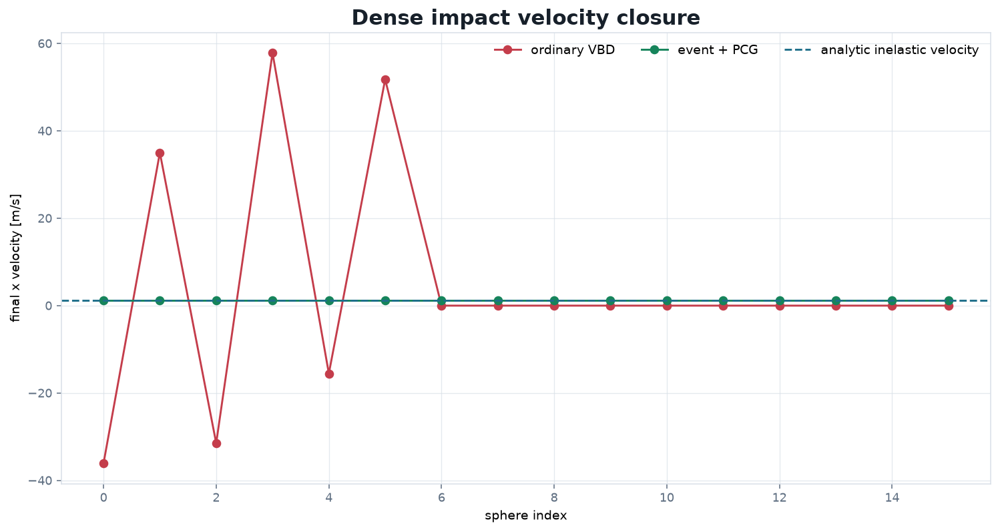
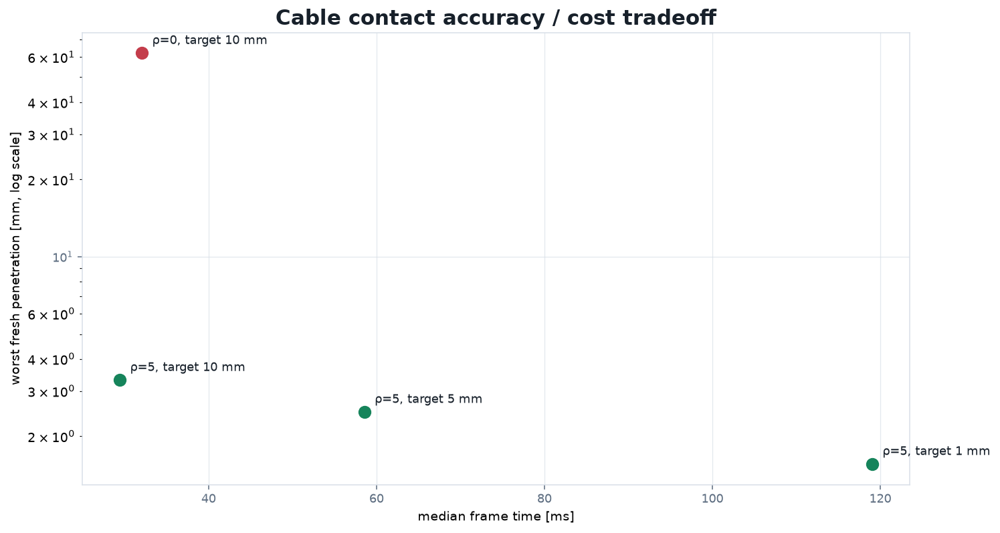
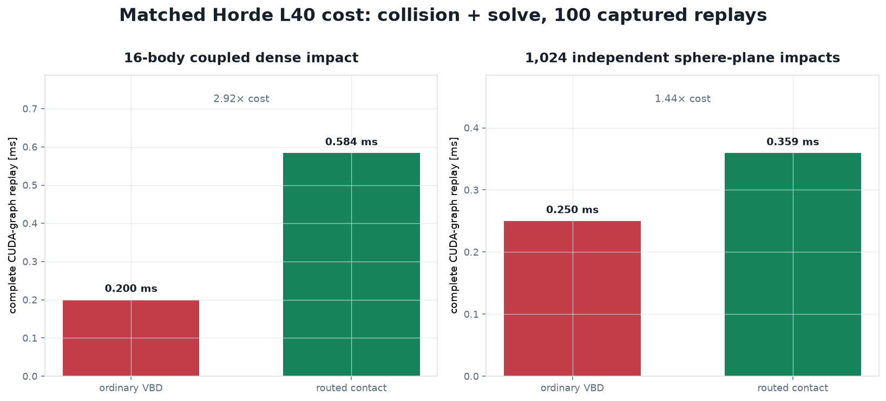

Outcome
The narrow ACM-like route is already excellent on the cases it is designed for. A correctly queried 10,000 m/s plane impact is stopped at event time without a tiny global step, and a dense equal-mass impact island reaches the analytic inelastic velocity while ordinary one-step VBD explodes. The cable case validates the opposite routing decision: event/PCG is gated off, full coupled VBD microsteps remain active, and a device-only fresh-query/rollback loop now enforces a 1 mm endpoint penetration budget.
Fast free-flight impact
Both sides receive the same predictive sphere–plane contact. Ordinary VBD attempts to repair the entire 30 ms displacement at the endpoint; the event route reconstructs the contact time, applies the normal impulse, then advances the remaining time from a physically consistent state.
| Method | Final signed gap | Final normal velocity | Event updates | Result |
|---|---|---|---|---|
| Ordinary one-step VBD | −16.579 m | −567.6 m/s | 0 | Tunnels |
| Queried event + direct impulse | +5.778 µm | −2.20e−13 m/s | 2 | Feasible, zero debt |
Dense simultaneous impact
Sixteen touching equal-mass spheres form one queried impact component. Body 0 enters at 20 m/s. The contact-only PCG route solves the instantaneous unilateral normal impulse system; it does not replace VBD for joints, friction, or persistent support.

| Metric | Ordinary VBD | Event + PCG |
|---|---|---|
| Max |v − v*| | 56.57 m/s | 5.01e−6 m/s |
| Gap interval | [−2.201, +2.679] m | [−1.42e−7, +2.01e−7] m |
| Momentum error | +21.74 kg·m/s | 0.0 kg·m/s |
| Energy ratio | 24.46 | 0.0625 |
| Captured GPU median | 0.200 ms | 0.584 ms |
| Event debt | — | 0 |
1:10⁶ mass chain also remained finite with zero debt and gaps within
approximately ±1.6e−7 m, but its velocity error is large relative to its tiny center-of-mass velocity.
A higher-precision unilateral reference is still required before claiming extreme mass-ratio robustness.
Jointed cable contact: coupled VBD wins the routing decision
The 20 rad/s cable-twist scene has 189 rigid bodies, joints, ground contact, self-contact, friction, and changing topology. The dispatcher correctly performs zero event/PCG body updates: contact-only impact impulses would omit the forces generating the contact. Instead, each selected bucket executes real coupled VBD microsteps with collision refresh.

| Contact setup | Worst fresh penetration | Median / p95 | Frames with newly missed pairs |
|---|---|---|---|
| ρ=0, target 10 mm | 62.03 mm | 32.04 / 64.13 ms | 22 / 120 |
| ρ=5, target 10 mm | 3.311 mm | 29.41 / 61.90 ms | 22 / 120 |
| ρ=5, target 5 mm | 2.487 mm | 58.54 / 124.32 ms | 28 / 120 |
| ρ=5, target 1 mm | 1.559 mm | 119.02 / 135.25 ms | 14 / 120 |
Validated speculative VBD: the new cable result
The cable path now saves the complete rigid frame state on the GPU, runs the displacement-predicted VBD branch, rebuilds contacts independently, and accepts only if maximum fresh penetration is at most 1 mm. A failed frame restores the exact start and replays a finer physical branch. Device flags route a fixed CUDA graph chain; there is no CPU decision or synchronization between attempts and no new global PCG solve.
| 120-frame strategy | Median / p95 | Worst fresh penetration | Finite-budget debt |
|---|---|---|---|
| Validated replay, 10 mm motion target | 31.45 / 98.63 ms | 0.956 mm | 0 motion · 0 replay |
| Always-fine, 1 mm motion target | 118.28 / 134.82 ms | 0.475 mm | 87 motion-cap frames |
{10:6, 20:11, 40:26, 80:53, 160:20, 320:4}. A no-replay graph measured
30.30 ms median versus 29.19 ms for ordinary adaptive VBD, about 1.1 ms common-path validation overhead.
This is a bounded endpoint certificate, not CCD. At 100 rad/s the same 30-frame stress remains finite with zero debt and 0.805 mm worst penetration. In the earlier 320-capped 1000 rad/s stress, the cap is exceeded, debt is reported, and penetration reaches 11.67 mm. The current ladder adds a 640-step emergency branch, but complete tunnel-and-separate trajectories still require swept candidates or CCD.
Computational cost: matched comparisons
The dense and independent-impact bars time the complete captured collision-plus-solve replay on the same Horde L40 over 100 samples. This is the honest trade: the robust route is not free, but the increment is bounded and buys a qualitatively different result.

| Captured workload | Ordinary VBD | Routed contact | Multiplier |
|---|---|---|---|
| Dense 16-body island | 0.200 ms · fails | 0.584 ms · closes | 2.92× |
| 1,024 independent impacts | 0.250 ms · −8.30 mm | 0.359 ms · +5.71 µm | 1.44× |
| Cable ρ=0 → ρ=5, target 10 mm | 32.04 ms | 29.41 ms | 0.92×* |
| Cable conditioned target 10 → 1 mm | 29.41 ms | 119.02 ms | 4.05× |
| Cable always-fine → validated replay | 118.28 ms | 31.45 ms | 0.27× (3.76× faster) |
*Cable figures are synchronized per-frame wall times from one chaotic run, not pure kernel timings; do not interpret the small ρ=5 speed difference as a general speedup. The robust 1 mm clock reaches up to 320 real VBD microsteps, so its cost is the clearest optimization target.
Current hybrid architecture
This is built on VBD. There is no new global PCG solve: PCG is a narrow, contact-only instantaneous normal impact accelerator. Jointed and frictional time evolution remains the ordinary coupled VBD solve.
GPU local-clock foundation and replay A/B
Device kernels construct contact-plus-joint components, reduce the potential displacement
h(|v| + R|ω|) + ½h²|a|, and choose power-of-two rates. A captured diagnostic produced labels
[0, 1, 1] and rates [2, 4, 4], preserving every inactive pose and velocity exactly.
Forcing insufficient component propagation set debt to 1 and failed closed to rate 8 for all participating bodies.
We also implemented the natural intermediate experiment: validate per contact-plus-joint island, restore only rejected-island rows, mask the cable driver, and replay only failed bodies. It passes the same independent 1 mm endpoint gate, but three fresh-process 120-frame A/B runs show no performance win:
| Replay scope | Median range | p95 range | Worst fresh penetration | Replay debt |
|---|---|---|---|---|
| Global graph replay (default) | 30.16-30.51 ms | 64.72-112.55 ms | 0.958-0.998 mm | 0 / 360 |
| Masked island-local replay (experimental) | 30.56-30.94 ms | 102.32-130.21 ms | 0.958-0.975 mm | 0 / 360 |
The negative result is useful: masking body arithmetic cannot repay global broad-phase, contact-generation, coloring, launch, and memory traffic. Island-local replay stays research-only until it has compact body, shape, joint, color, and contact worklists plus conservative island envelopes. One 640-step emergency run removed the last replay debt at 0.973 mm worst penetration, but its 230.49 ms p95 confirms that the final bucket is a safety valve, not an ordinary operating point.
A second experiment remembered the rate that passed after a rejection and used it as a temporary floor for later frames. The controller is entirely device-resident and cannot weaken the fresh certificate, but global memory also failed the performance bar:
| Certificate-memory policy | Median range | p95 range | Replayed frames | Result |
|---|---|---|---|---|
| Off (clean default) | 30.16-30.51 ms | 64.72-112.55 ms | 10-20 | Keep |
| One-frame release | 30.42-32.12 ms | 104.65-139.58 ms | 12-16 | Experimental |
| Sticky four-easy-frame release | 31.60-62.64 ms | 92.83-153.38 ms | 7 | Over-schedules |
Every memory run stayed below 1 mm with zero replay debt. Sticky memory reduced rejection count but sometimes held all three cables at 320 physical steps long enough to double median cost. It may become valuable only after compact per-island execution prevents one cable's memory from scheduling the other two.
Limitations and non-claims
- No complete collision guarantee. Success assumes the needed pair is in the predictive query. Arbitrary curved features, thin geometry, large rotation, and contacts created after impulse redirection are not certified.
- Replay is globally scoped by default. Experimental failed-island restore/masking works, but it is not faster while collision and solver buffers are still scanned globally.
- PCG is normal-impact only. It does not solve friction, joints, persistent support, or cable forces; routing those cases into PCG would be physically incomplete.
- Cable contact is not penetration-free. Even hundreds of physical microsteps leave finite penetration, and the rare 640-step emergency branch is expensive.
- Fresh pairs are still discovered late. Depending on the conditioned rate, 14–28 of 120 cable frames contained pairs absent from the solver's retained set.
- Active clocks have feature exclusions. Particle coupling, rigid contact-history matching, Dahl cable history, and event projection cannot yet share the experimental active-body mask safely.
- This is not original ACM's theorem. Finite queried events and finite VBD buckets do not inherit ACM's infinite-barrier/separating-certificate no-interpenetration result.
Is there a paper?
Not from any one ingredient: event-time impact, local time stepping, PCG contact, effective-mass scaling, and CUDA graphs all have prior art. The defensible paper direction is the integrated graph-resident VBD dispatcher. The validated speculative VBD loop now supplies rollback/finer replay and a strong equal-quality speed result; a paper still needs conservative swept candidate completeness, compact island worklists, broad comparisons against CCD/IPC and adaptive rigid solvers, and a careful novelty review.
Reproduction and raw evidence
Recorded on NVIDIA L40, Warp 1.17.0.dev20260807, CUDA toolkit 12.9,
driver 12.8, branch codex-sol/contact-strategy. These are focused report benchmarks;
no unit-test suite was run. Impact videos replay the exact Horde NPZ endpoints in Newton ViewerGL; cable
videos rerun all physics and capture every Newton framebuffer directly on Horde.
curl -L https://jumyungc.github.io/newton/reports/robust_gpu_contact_vbd/ingredients/record_horde_results.py \
-o /tmp/record_horde_results.py
cd /home/horde/git/newton-codex-sol-contact
PYTHONPATH=$PWD /home/horde/git/newton/.venv/bin/python /tmp/record_horde_results.py \
--device cuda:0 --frames 120 --output-dir /tmp/robust_gpu_contact_vbd